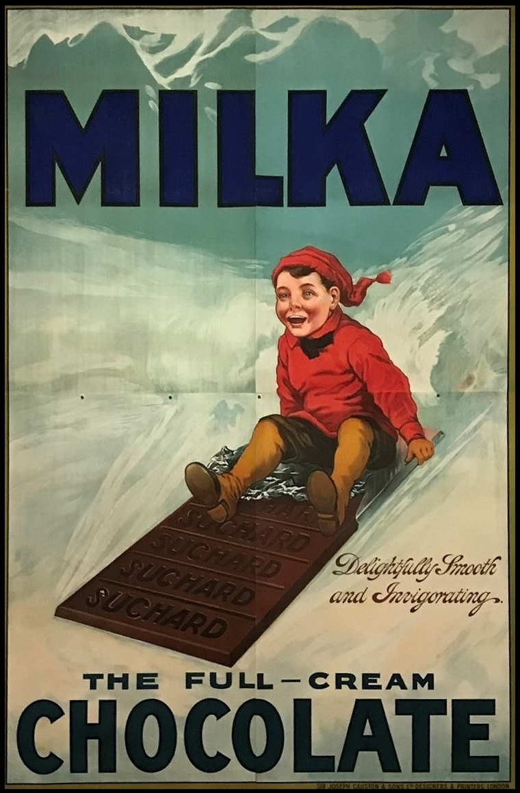

While all milk chocolate contains cocoa, milk and sugar, the proportion of these ingredients varies between countries and brands, which in turn affects its nutritional value. The driving force for these differences is taste. For example, Belgian chocolate is known for its mild milky flavour, while some Russian brands have a strong cocoa taste. The taste drives the ingredients, although these are also affected by other factors, particularly economics. For example, cost is the main reason for the introduction of cocoa butter replacements like coconut and palm oil. However, there are also regulatory reasons. In 1973, for example, the European Union decreed that chocolate must have a minimum of 35 percent dry cocoa solids. More recently, China has also introduced legislation to require locally produced milk chocolate to contain 25 percent cocoa butter.
